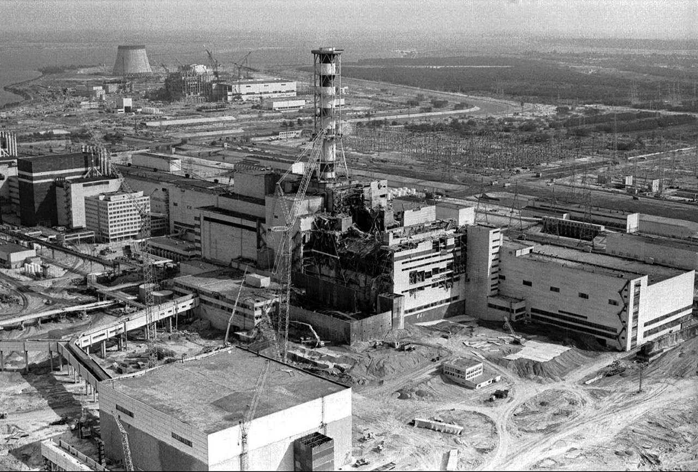

Радиационные аварии
Наша жизнь невозможна без использования атома в мирных целях
Но порою наша беспечность приводит к катастрофам...
Наша жизнь невозможна без использования атома в мирных целях
Но порою наша беспечность приводит к катастрофам...
Многие люди стремятся попасть в сферу ядерной энергетики по простой причине: высокий заработок. Однако, нельзя забывать, с чём придется иметь дело. Ведь использование энергии, запасённой в самом атоме, является невероятно полезным делом, но и требует большой подготовки. Это большая ответственность. И беспечность людей в этой области может привести к трагедиям.
На рисунке изображена авария на Чернобыльской АЭС. Это яркий пример того, к чему может привести халатность к ядерным технологиям, в частности, к ядерным испытаниям.
Чаще всего под «радиацией» подразумевают ионизирующее излучение.
Ионизирующее излучение - выброс в окружающую среду большого количества высокоэнергетических частиц.
К нему не относят видимый свет, ультрафиолетовое и инфракрасное излучение (не обладают достаточной скоростью для этого).
Особенность явления радиоактивности состоит в том, что она может крайне опасно влиять на организм живого существа.
В частности, гамма-излучение: поток высокоэнергетических фотонов. Их движени настолько быстро, что они способны разрушать внутреннюю струкутры клетки человека в считанные часы. Данное заболевание называется лучевым. И лечению лучевая болезнь не поддаётся. Пожалуй, одно из страшнейших заболеваний в истории человечества, ибо в тяжелой форме болезненное состояние сопровождается адскими муками.
Цель этого сайта рассказать об ужаснейших катастрофах в области ядерной энергетики, таких как авария на Чернобыльской АЭС, авария на Фукусима-1 и авария на Три-Майл-Айленде. Они продемонстрировали тот факт, что человечеству необходимо постоянно совершенстовать данные технологии. Ибо халатное и беспечное отношение может привести к гибели не только сотен, но и тысяч жизней.